An Afterlife for Atheists
Plan B · Contents-page design
The selected homepage composition is expanded below into light and dark themes, desktop and mobile chapter pages, and standalone illustration assets. These static design mockups were approved on October 9, 2026. The implemented website is available for local review at http://127.0.0.1:4321/. Public launch remains a separate checkpoint.
Homepage
A compact book introduction and illustration, followed by eleven chapter links in reading order in the current implementation. These approved historical mockups show the earlier nine provisional labels; the official titles supplied on October 9, 2026 are now used on the website.

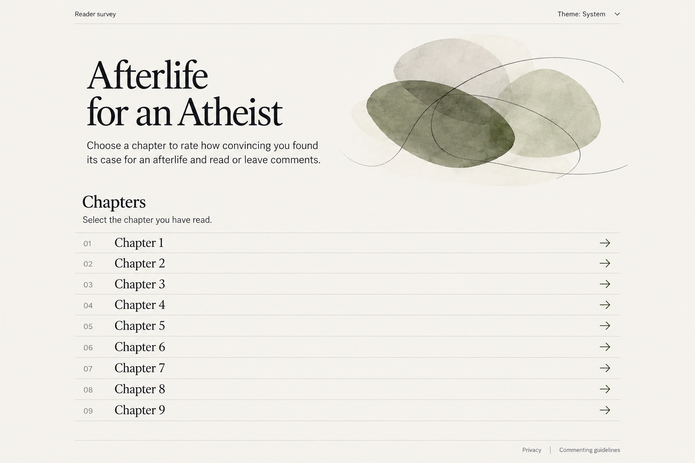

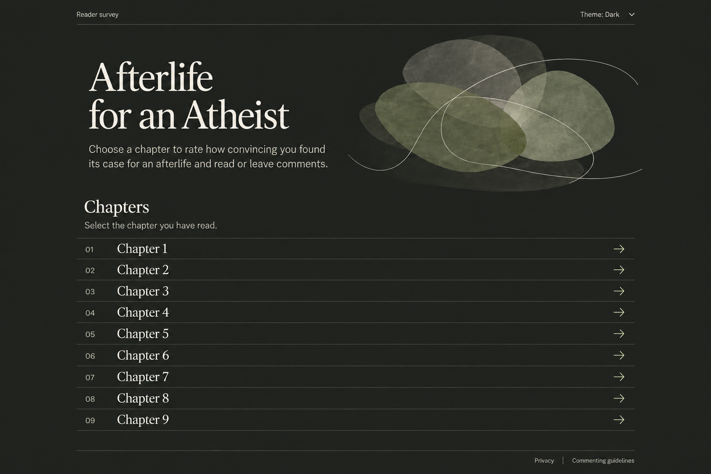

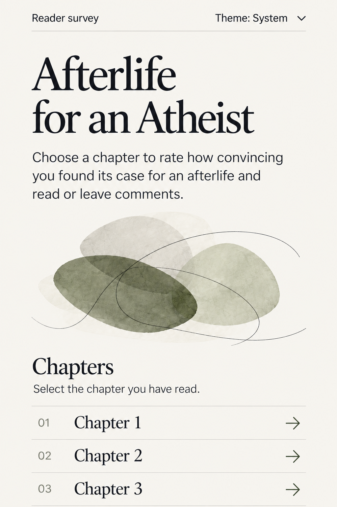

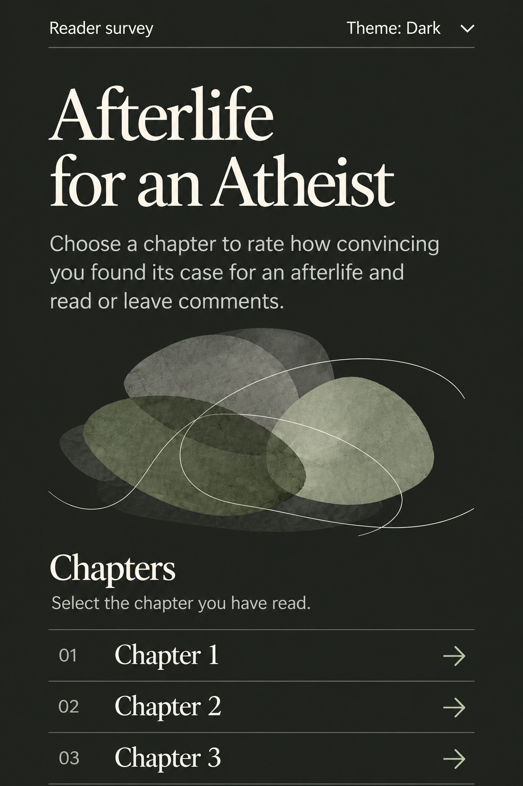
Chapter page
Chapter title and question, rating controls, public results, then independent comments. An empty chapter shows “No ratings yet.”

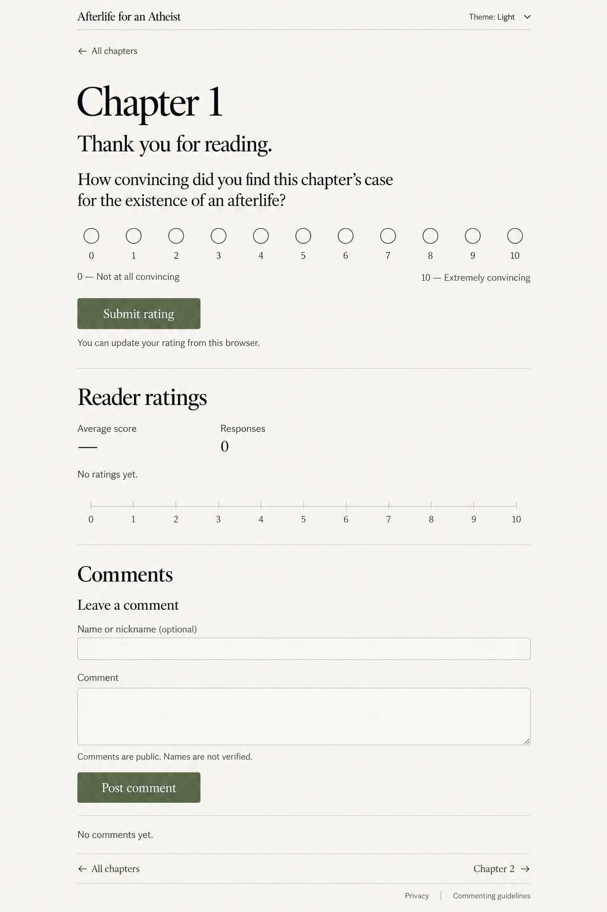

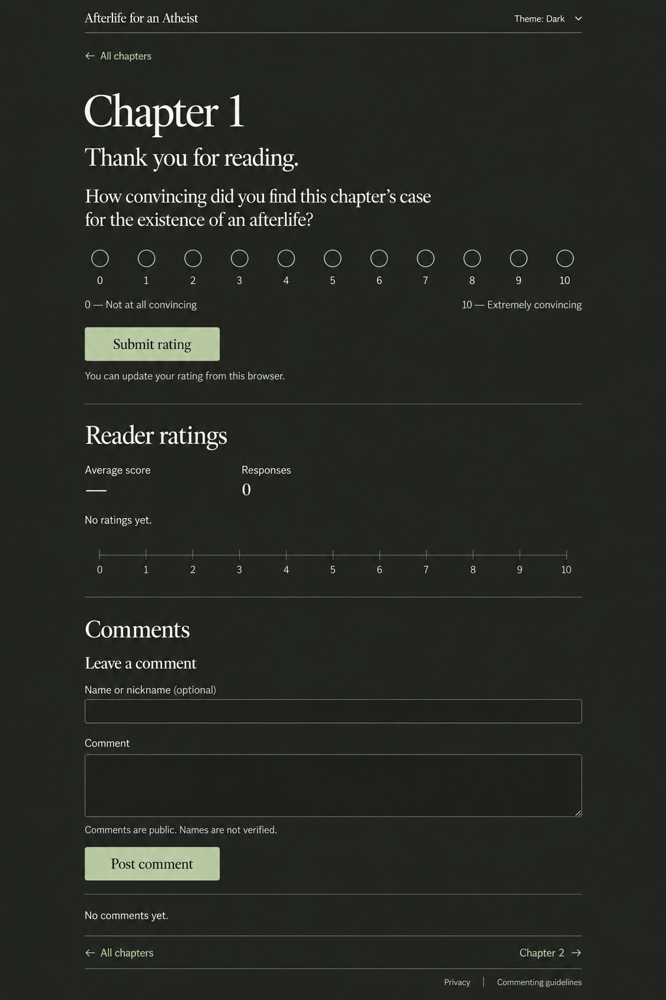
Mobile chapter flow
All eleven rating choices fit on two rows. The comment section below is a separate scrolled view of the same page.

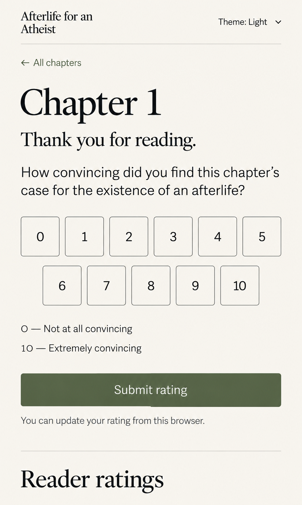

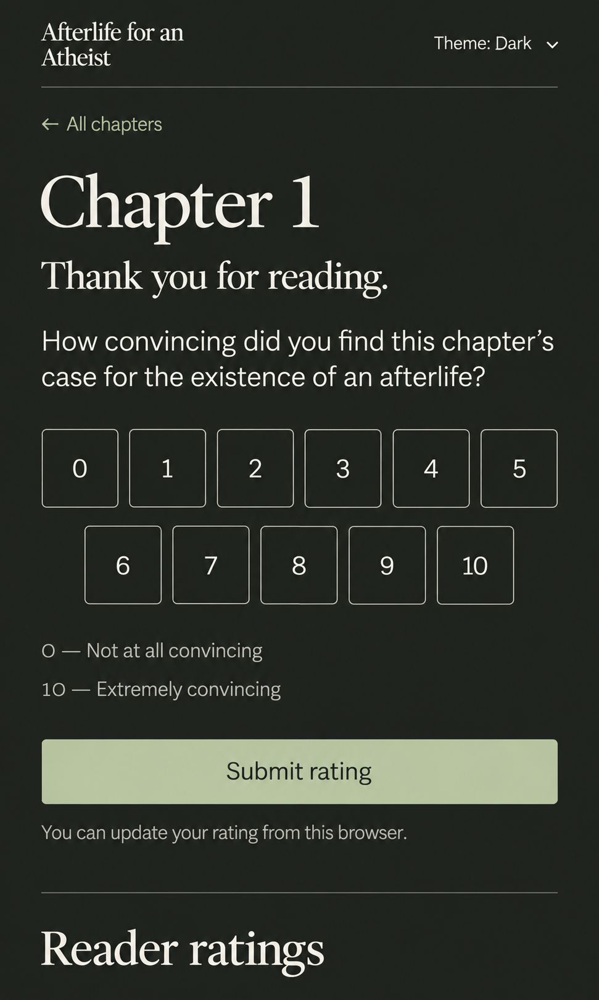

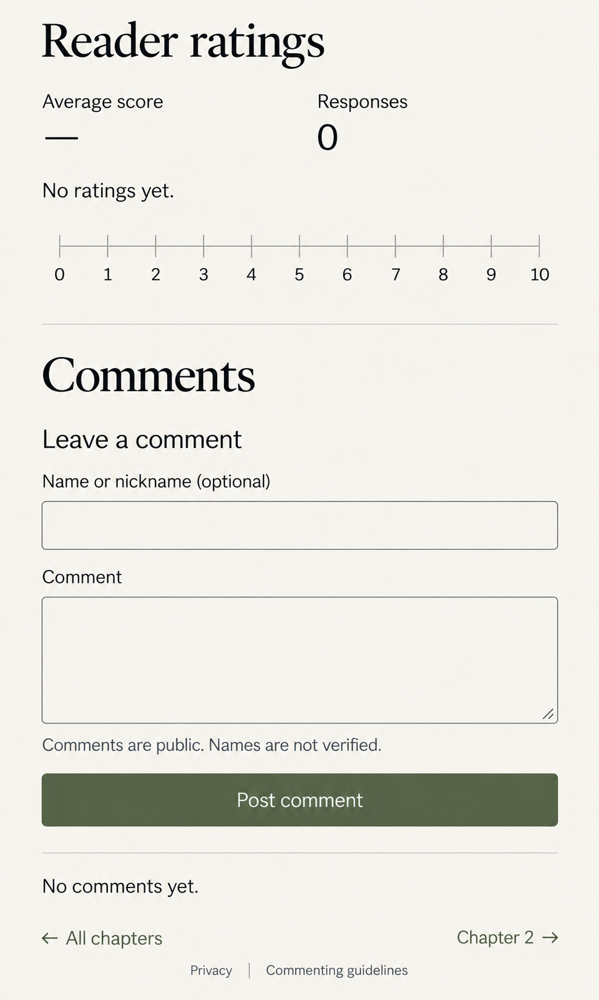
Standalone illustration
Original overlapping ink forms and fine lines, without lettering, religious symbols, or depictions of an afterlife. Transparent assets are shown on their intended page backgrounds. Exact generation prompts are retained in the project.
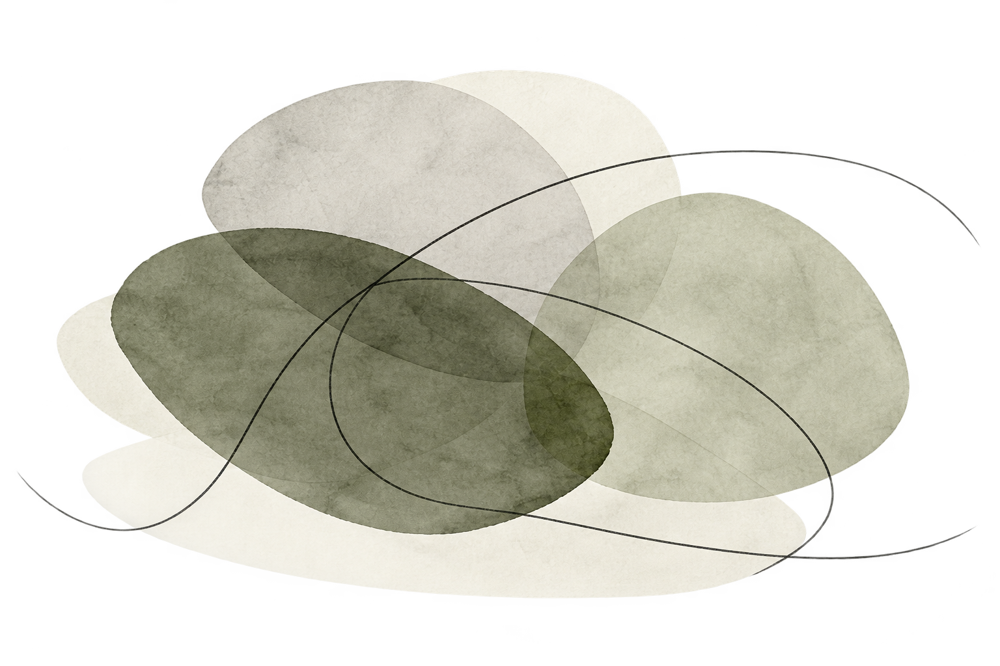
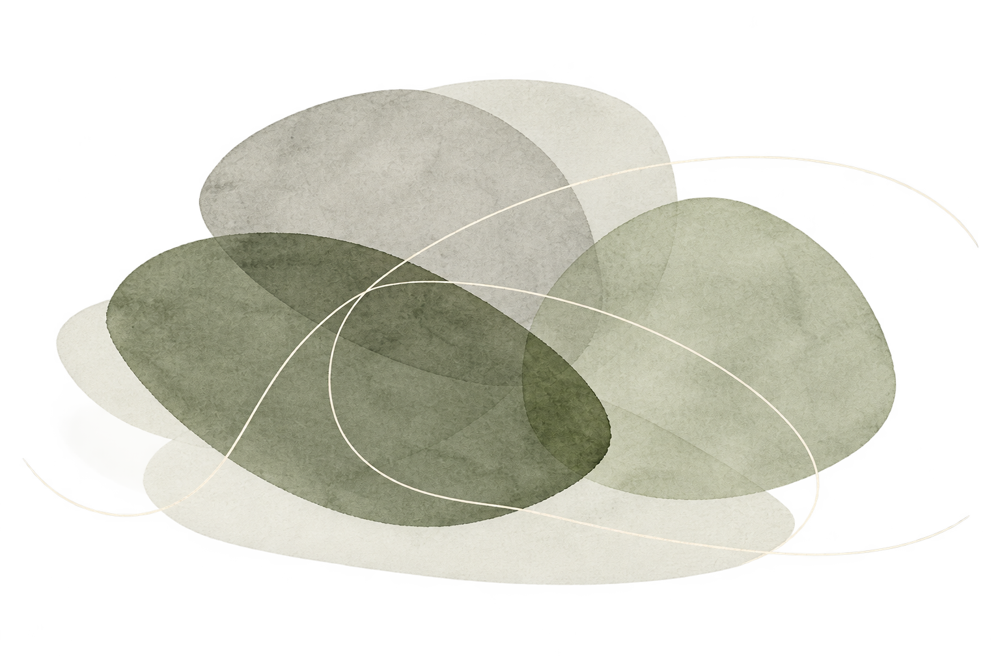
Interface wording
The wording below is the source of truth if generated mockups contain small typographic discrepancies. The live site will use selectable HTML text.
- Book title
- An Afterlife for Atheists
- Introduction
- A chapter-by-chapter reader survey on the book’s case for the existence of an afterlife.
- Chapter instruction
- Select the chapter you have read.
- Greeting
- Thank you for reading.
- Rating question
- How convincing did you find this chapter’s case for the existence of an afterlife?
- Scale endpoints
- 0 — Not at all convincing
10 — Extremely convincing - Rating action
- Submit rating / Update rating
- Empty results
- No ratings yet
- Comment fields
- Name or nickname (optional)
Comment
Your comment will be public. You can post without submitting a rating. - Comment action
- Post comment
- Empty comments
- No comments yet
- Theme choices
- System · Light · Dark
Visual checkpoint
Review the full set above and share approval or requested changes in the chat. The illustration review below records approval of the actual asset and the plan to build text, controls, and chapter links as accessible HTML.
Open illustration and build-plan review